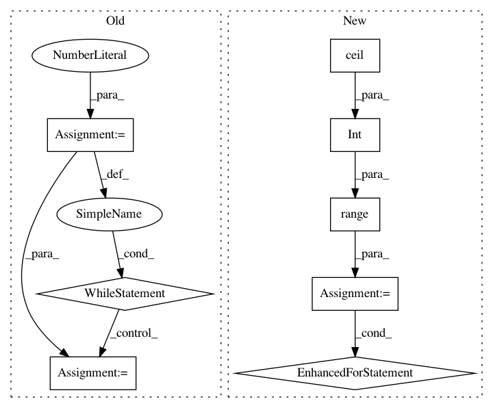

a294465b5e021ff9e482a04a2bc030c53d46fee7,lore/io/connection.py,Connection,insert,#Connection#Any#Any#Any#,121
Before Change
rows = io.BytesIO()
else:
rows = io.StringIO()
batch = 0
while batch * batch_size < len(dataframe):
rows.seek(0)
slice = dataframe.iloc[batch * batch_size:(batch + 1) * batch_size]
slice.to_csv(rows, index=False, header=False, sep="|", na_rep="\\N", quoting=csv.QUOTE_NONE)
rows.seek(0)
self._connection.connection.cursor().copy_from(rows, table, null="\\N", sep="|", columns=dataframe.columns)
batch += 1
else:
dataframe.to_sql(
table,
self._connection,
After Change
self._connection = self._engine.connect()
if self._engine.dialect.name in ["postgresql", "redshift"]:
for batch in range(int(math.ceil(float(len(dataframe)) / batch_size))):
if sys.version_info[0] == 2:
rows = io.BytesIO()
else:
rows = io.StringIO()
slice = dataframe.iloc[batch * batch_size:(batch + 1) * batch_size]
slice.to_csv(rows, index=False, header=False, sep="|", na_rep="\\N", quoting=csv.QUOTE_NONE)
rows.seek(0)
self._connection.connection.cursor().copy_from(rows, table, null="\\N", sep="|", columns=dataframe.columns)
del rows
gc.collect()
else:
dataframe.to_sql(
table,
self._connection,
In pattern: SUPERPATTERN
Frequency: 3
Non-data size: 8
Instances
Project Name: instacart/lore
Commit Name: a294465b5e021ff9e482a04a2bc030c53d46fee7
Time: 2018-01-10
Author: montanalow@users.noreply.github.com
File Name: lore/io/connection.py
Class Name: Connection
Method Name: insert
Project Name: tsurumeso/waifu2x-chainer
Commit Name: 6e4be1285888e9caa90fa483e10b869ceb3157d4
Time: 2017-03-03
Author: nstm101339@gmail.com
File Name: waifu2x.py
Class Name:
Method Name: upscale_image
Project Name: scikit-image/scikit-image
Commit Name: cc31d7f56d6cd8569a5f7b47c254d89a85e8691b
Time: 2017-04-17
Author: grlee77@gmail.com
File Name: skimage/transform/pyramids.py
Class Name:
Method Name: pyramid_laplacian